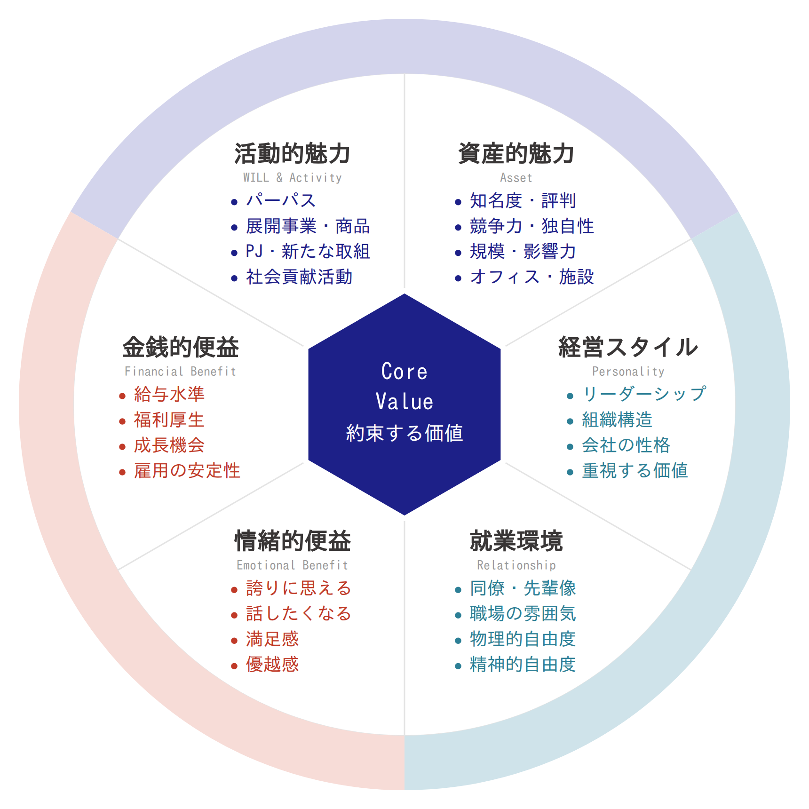
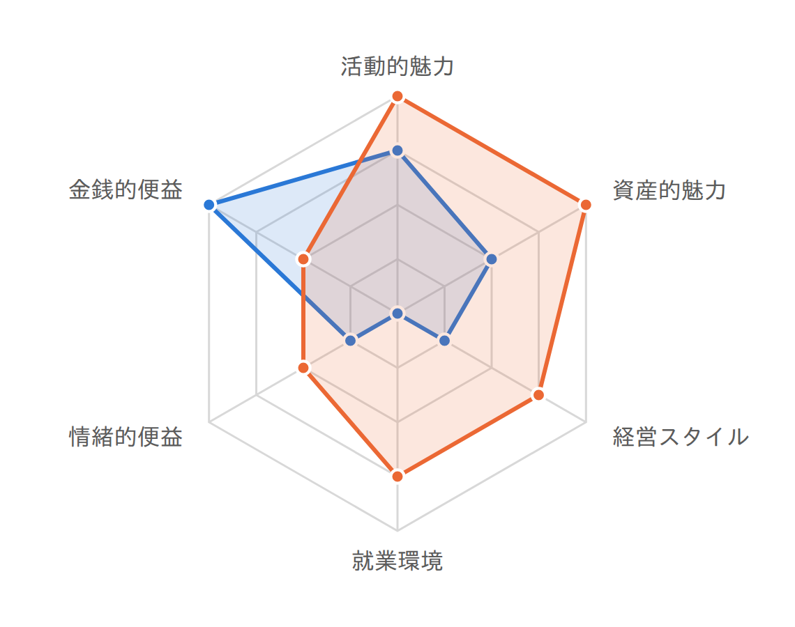

株式会社サンプル 様
対象サイト: https://recruit.example.com/vision/
比較サイト: https://careers.example.co.jp/
2026年8月3日
本レポートは画面構成をご確認いただくためのサンプルです。
記載の数値・文章はすべて架空のもので、実在するサイトの診断結果ではありません。
|
 |
採用ブランドは、大きく3つの領域に分けて捉えます。
6つの項目にはそれぞれ4つの下位要素があり、合計24項目です。中心の Core Value（約束する価値）は、その24項目を貫く「この会社が候補者に約束するもの」にあたります。 本レポートでは、この24項目のうち何件が、サイトの記述から読み取れたかを数えています。 点数付けではなく、件数の集計です。 読み取れなかった項目は、その魅力が「無い」という意味ではありません。 サイトにそう書かれていない、というだけです。また、採用ブランドは本来、 グループインタビュー・口コミ・内定者や辞退者へのインタビュー・説明会・SNSなども 併せて構築するものです。今回はそのうちサイトの記述のみを拝見しています。 |
6つの項目それぞれについて、該当する内容がサイトの記述から何件読み取れたかを集計しています（点数ではありません）。
解析したURL：https://recruit.example.com/vision/
自社サイト 11 / 24項目 |
競合サイト 18 / 24項目 |
サマリー
|
 |
| 会社の魅力 | 会社との距離 | 仕事の魅力 |
活動的魅力 3 / 4件
| 資産的魅力 2 / 4件
| 経営スタイル 1 / 4件
| 就業環境 0 / 4件 該当する記述は | 情緒的便益 1 / 4件
| 金銭的便益 4 / 4件
|
キーメッセージ：技術で社会基盤を支える、という主題が一貫して置かれています。
AI解析による印象：幅広さは伝わるものの、それが働く人にとって何の嬉しさにつながるのかという点との距離があり、情緒的便益の記述が薄いのがもったいないところです。
前ページで「該当あり」とした項目について、サイトのどの記述を根拠にしたかを記載しています。抜粋はサイト上の文章をそのまま引用したもので、要約や言い換えは含みません。
| 項目 | 何について | サイトからの記述 |
|---|---|---|
| 活動的魅力 | パーパス | 「技術で社会の「あたり前」を支える。それが私たちの存在意義です。」 |
| 活動的魅力 | 展開事業・商品 | 「通信インフラ、公共システム、金融基盤の3領域で事業を展開しています。」 |
| 活動的魅力 | PJ・新たな取組 | 「2025年より、次世代交通システムの実証実験に参画しています。」 |
| 資産的魅力 | 知名度・評判 | 「国内シェア第2位。導入企業は1,200社を超えます。」 |
| 資産的魅力 | 規模・影響力 | 「従業員数3,400名、全国12拠点で事業を運営しています。」 |
| 経営スタイル | 重視する価値 | 「「まず動く」「相手の立場で考える」を行動指針としています。」 |
| 情緒的便益 | 誇りに思える | 「自分の仕事が社会の土台を支えているという実感があります。」 |
| 金銭的便益 | 給与水準 | 「初任給は月額28万円（2026年度実績）。」 |
| 金銭的便益 | 福利厚生 | 「住宅補助、社宅制度、確定拠出年金を用意しています。」 |
| 金銭的便益 | 成長機会 | 「資格取得支援制度により、受験費用を全額補助します。」 |
| 金銭的便益 | 雇用の安定性 | 「設立以来60年、無借金経営を継続しています。」 |
4つの観点それぞれについて、判定と、その理由を一言で記載しています。
書くべきことが書けているか 良好採用ページを確認できました。募集要項の記載内容そのものの確認は今後追加予定で、現時点では採用ページの有無と情報量のみを見ています。 | 伝えたいことが分かりやすく伝わっているか 良好ページの見出しと紹介文が整理されており、何の会社かが伝わる状態でした。 |
知りたい情報にたどり着けるか 改善の余地があります応募・問い合わせへの入口が少なく、候補者が連絡手段を見つけにくい状態でした。 | 見やすく、使いやすいか 改善の余地があります画像の説明文と表示速度に改善の余地がありました。配色やレイアウトの印象そのものは自動判定の対象外です。 |
取得できなかった項目は0点として扱わず、算出の対象から外しています（測定カバー率 90.9%／確信度 93.3%）。
24項目それぞれについて、サイトに該当する記述があったかどうかを並べています。●は記述があったこと、－は記述が見つからなかったことを示します。－は「その魅力が無い」という意味ではなく、そのサイトでは触れられていなかった、という意味です。
|
|
|
合計 ● 自社サイト 11 / 24項目 ● 比較サイト 18 / 24項目
24項目のうち、比較サイトには記述があり、御社のサイトでは触れられていなかった項目です。書かれていないことが弱みという意味ではありません。候補者が2つのサイトを見比べたとき、その情報を比較サイト側でしか得られない、という事実を示しています。
比較サイトにあり、御社のサイトでは触れられていなかった項目9件
社会貢献活動 事業の外で何に取り組んでいる会社なのか | 競争力・独自性 同業他社と何が違うのか | オフィス・施設 どんな場所で働くことになるのか |
リーダーシップ 誰がどんな考えで会社を率いているのか | 組織構造 どんな体制の、どこに配属されるのか | 同僚・先輩像 どんな人たちと働くことになるのか |
職場の雰囲気 日々どんな空気の中で仕事をするのか | 物理的自由度 勤務地・時間・リモートの自由度はどれくらいか | 満足感 働いていて何が満たされるのか |
御社のサイトにあり、比較サイトでは触れられていなかった項目2件
成長機会 どんな力が身につくのか | 雇用の安定性 長く働き続けられるのか |
どちらのサイトでも触れられていなかった項目4件
会社の性格 / 精神的自由度 / 話したくなる / 優越感
この業界のサイトでは語られにくい領域です。先に触れることで、他社との違いをつくれる余地があります。
【ワンポイント】情報充足が出来ていない
候補者が十分な情報を得られず、エントリーの土俵に上がれない可能性があります。24項目のうち、御社のサイトで触れられていたのは11項目、比較サイトは18項目でした。
3つの領域のうち、候補者が比較サイト側でしか情報を得られない差が最も大きかったのは「会社との距離」でした。この領域から3項目を挙げます。
| 会社の魅力 | 自社 5 / 8 | 比較 8 / 8 | ||
| 会社との距離 | 自社 1 / 8 | 比較 8 / 8 | ||
| 仕事の魅力 | 自社 5 / 8 | 比較 6 / 8 |
1 同僚・先輩像 どんな人たちと働くことになるのかを知ろうとします。 御社のサイト 記述が見つかりませんでした 比較サイトの記述 「入社3年目の先輩が、日々どんな判断をしているかを一日の流れとともに紹介しています。」 | 2 職場の雰囲気 日々どんな空気の中で仕事をするのかを知ろうとします。 御社のサイト 記述が見つかりませんでした 比較サイトの記述 「部署をまたいだ相談が日常的に起きる、フラットな環境です。」 | 3 物理的自由度 勤務地・時間・リモートの自由度を知ろうとします。 御社のサイト 記述が見つかりませんでした 比較サイトの記述 「リモートワークとコアタイムなしのフレックスタイム制を導入しています。」 |
なお、これらを「サイトに書き足す」ことで解決するとは限りません。実態はあるのに伝えられていないのか、まだ言葉になっていないのか ―― その切り分けについては最終ページをご覧ください。
あわせて、サイトの作りについて
画像の説明文（読み上げ対応）／ページの表示の速さ／応募・問い合わせの受け口 の3点に改善の余地がありました。いずれもサイトの作りに関するもので、上の「何を書くか」とは別の話です。詳細は担当者よりご説明します。
ここから先は、サイトの外の話です
今回お見せしたのは、御社の採用サイトに「何が書かれているか」だけです。
これは採用ブランドを形づくる情報源のひとつにすぎません。
1
書かれていない項目には 実態はあるのに伝えられていないのか、まだ言葉になっていないのか。 前者はサイトで解決しますが、後者はサイトを直しても変わりません。 |
2
その切り分けは 社員が実際に何を感じているか、辞退した方が何を理由に離れたか、 説明会で何を語っているか。サイト以外の情報と突き合わせて初めて判断できます。 |
3
私たちは採用ブランドの グループインタビュー、社員・内定者・辞退者へのヒアリング、説明会の設計。 何を約束する会社なのかを言葉にするところから支援しています。 |
この診断で見えた差が、伝え方の問題なのか、言語化の問題なのか。
一度お話しさせてください。担当者よりご連絡いたします。